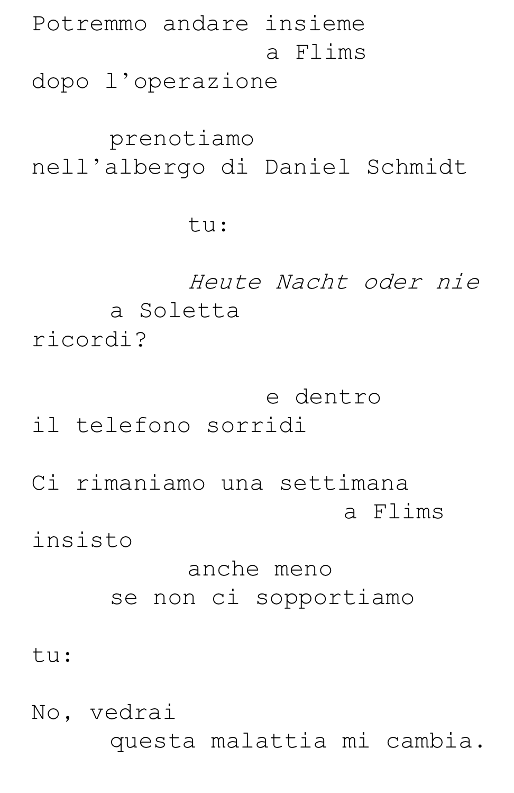
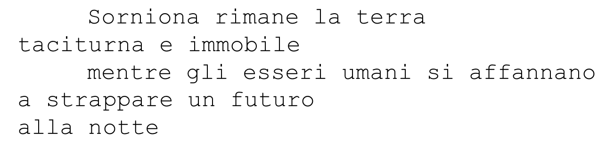
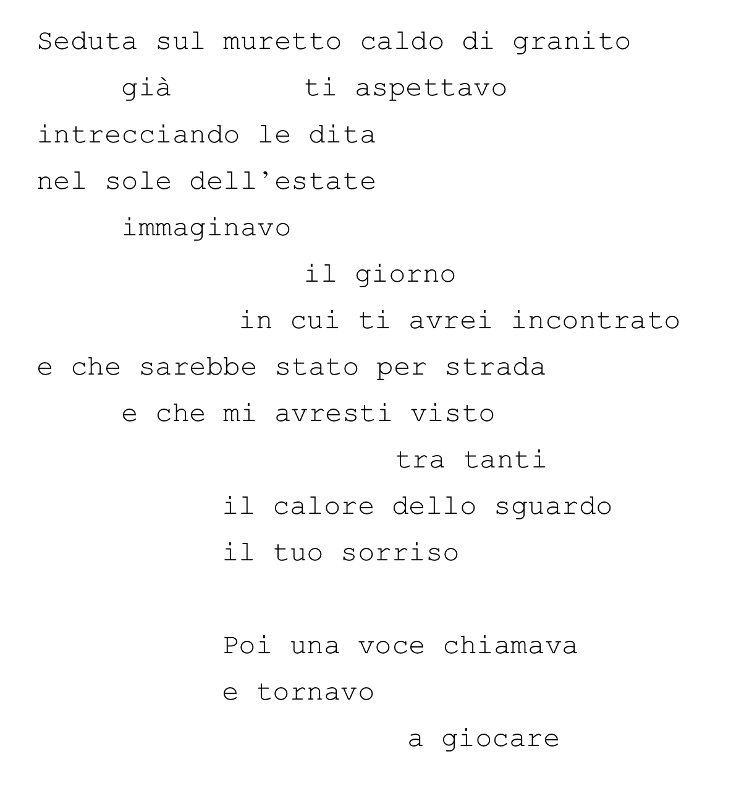

Scrittura
"Ottenere la perfezione è impossibile, di qualunque cosa si tratti, a maggior ragione dunque se si tratta di cose scritte, e più che mai è impossibile in note come queste che sono costituite da migliaia e migliaia di brandelli di possibilità e di ricordi."
T. Bernard, Il respiro
Spettri familiare
Spettri familiari è il romanzo di una famiglia normale, normalmente segnata da ipocrisia e tacite reciproche coperture. Suddiviso in due parti, la prima ambientata negli anni Ottanta del Novecento, la seconda ai nostri giorni, si sviluppa su più piani narrativi: al racconto in terza persona si alternano taccuini, lettere, architetture morte e nella seconda parte la voce in prima persona dei protagonisti. La geometria della struttura e il teatro delle cose inanimate fanno emergere in filigrana i sobbalzi dell’esistenza.
Ibis, 2023
Lì e l'ombra
In un mattino di sole Li si sveglia su un prato accanto alla sua ombra.
Apre gli occhi e intorno a sé non vede traccia dei suoi fratelli, con i quali era scappata dalla Furia molto tempo prima.
Davanti a lei ci sono fili d’erba pieni di un linguaggio silenzioso e una strada ricoperta di polvere con tanti sassolini bianchi.
Li è una piccola persona con un grande coraggio per mantello.
Pagine d'arte, 2017
Binomio fantastico

Di felice, 2014
Il malinteso
«Dopo la prima visita alla SNIA continuo a tornarci, nei giorni nelle settimane che seguono. Quello scenario apocalittico di muri precari, terrapieni di macerie, resti di rotaie dentro i capannoni, con le sue baracchine fatte di assi e vecchie porte prese nei cantieri e con quella miriade di mendicanti d’ogni sorta: uomini muscolosi e spacconi, giovanissime madri e nonne, innumerevoli bambini, con il tanfo delle esalazioni chimiche e lo squittio dei topi, a due passi da casa mia, esercita su di me un forte richiamo, quasi un risucchio che non voglio contrastare ma che cerco di circoscrivere in funzione delle mie forze.» Intorno a noi ci sono gli invisibili, gruppi di persone che vivono al margine delle “nostre ricche città”.
Ibis, 2012
Terra taciturna e apocalisse

Campanotto, 2011

Angeli di stoffa

Pagine d'arte, 2009

Il male minore
Carissimo Antonio
ci provavo, ma poi non riuscivo a trattenermi a lungo, tra i divani e gli specchi. Mi dicevo di tener duro, che avrei guadagnato qualcosa, non so, dell’affetto, riconoscenza, quello che serve insomma per cementare i rapporti e costruire solidi legami, per essere accolti, con i cugini e i cognati, nella fotografia di Natale, per ricevere i lini vecchi, e muoversi più leggeri sui gradini del mondo.
Ed. Fondazione Beltrametti, 2006
Geografia senza fiume

Campanotto, 2006